翻译难免有错误, 有问题可以联系QQ2726725926, 或者微博@mlln-cn, 另外我们提供统计咨询, 有问题也可以联系我们。本手册是由Meta-Essentials手册翻译而来, 翻译的初衷是我们有同学要求使用Meta-Essentials做一个分析研究, 而Meta-Essentials是比较成熟的常用软件, 其实它是一套excel文件组成的, 适合大家学习, 并且还能看到计算过程, 所以我们选择Meta-Essentials作为一个教学的样板, 所以翻译了它的手册, 大家有需要用到的, 尽管拿去。
1 引言
Meta-Essentials 是一套工作簿，可以帮你整合来自不同研究的效应量，并提供有解释意义的数字、表格和统计数据。中文版可以从 www.mlln.cn 下载。
1.1 该手册的目的
本用户手册是Excel工作簿的使用指南。它不是关于您应该如何搜索研究、您应该包括哪些研究以及如何解释meta分析结果的指南。我们针对这些问题单独撰写了一篇文章（参见 Hak、Van Rhee 和 Suurmond，2015b）。我们还发表了一篇论文，描述了 Meta-Essentials 及其与其他元分析工具的比较（Suurmond、van Rhee 和 Hak，2017 年）。
1.2 结构
使用 Meta-Essentials 的第一步是为 Meta 分析选择合适的工作簿。
然后，本手册讨论了如何输入数据、如何进行基本的meta分析和生成森林图、如何进行亚组分析、调节分析和各种发表偏倚分析。
此外，还讨论了表格“背后”的计算和应用的统计方法，但是，使用 MetaEssentials 不需要了解或理解这些方法。
接下来，手册讨论了仅适用于特定工作簿的说明。本手册最后讨论了如何调整输出以便于在论文中使用。
翻译难免有错误, 有问题可以联系QQ2726725926, 或者微博@mlln-cn, 另外我们提供统计咨询, 有问题也可以联系我们。本手册是由Meta-Essentials手册翻译而来, 翻译的初衷是我们有同学要求使用Meta-Essentials做一个分析研究, 而Meta-Essentials是比较成熟的常用软件, 其实它是一套excel文件组成的, 适合大家学习, 并且还能看到计算过程, 所以我们选择Meta-Essentials作为一个教学的样板, 所以翻译了它的手册, 大家有需要用到的, 尽管拿去。
2 选择工作簿
Meta-Essentials 是一组七个不同的Excel工作簿，每个文件用于不同类型的效应量进行meta分析（稍后将对其进行解释）。
尽管工作簿看起来相同，但它们“背后”的算法却不同。从用户的角度来看，最显着的区别是工作簿需要不同的输入数据。
下面列表中给出了不同工作簿的概述
Effect size data.xlsx: 可以被认为是一个通用的版本, 当用户具有 (1) 效应量的点估计值和 (2) 其标准误时，可以使用此工作簿。不同研究的效应量必须具有可比性，或者换句话说，它们的单位必须相同。这个工作簿只能用于连续量表上的效应量，可以是非标准化的（例如毫米、分钟、克、美元、回归权重等）或标准化的（Cohen’s d、Hedges’ g）。在这个意义上，标准化回归x系数之间和相关系数之间不是等距变化的量，因此工作簿 1 不能用于对这种类型的效应量进行元分析。工作簿 5、6 和 7 可用于相关系数和多元回归系数的meta分析。工作簿2-7实际上是第一个工作簿的扩展, 他们在进行元分析之前进行了适当的数据转换。这些包括对效应量的计算和效应量的转换。工作簿 2 到 7 中的每一个都针对特定类型的效应量执行特定的操作。要决定您应该使用哪个工作簿，您必须首先确定您的效应量是“差异类”还是“相关类”。差异类或 d 类涉及基于组间或组内差异的效应大小；您可以使用工作簿 2、3 或 4。“相关类”效应量是两个（或多个）连续变量的相关；您可以使用工作簿 5、6 或 7。
2.1 d类效应量
d类就是主要是考察组间或者组内差异的, 可以从两个维度看:
- 因变量是连续还是分类: 不同类型的因变量导致不同的效应量, 分类数据通常使用比率作为效应量, 而连续变量往往使用均值差。
- 组间还是组内研究: 组间设计指的是两个或多个独立组之间的比较, 而组内设计是一个组的不同时间点或者不同特质的比较。
两个维度交叉就可以得到4类设计的研究, 工作簿2, 3,4适用于不同的情况, 具体见下表:
- 因变量是分类的, 组间设计的研究, 使用工作簿2”Differences between independent groups - binary data.xlsx”
- 因变量是连续的, 组间设计的研究, 使用工作簿3”Differences between independent groups - continuous data.xlsx”
- 因变量是连续的, 组内设计的研究, 使用工作簿4”Differences between dependent groups - continuous data.xlsx”
- 因变量是分类的, 组内设计的研究, 没有适用的文件, 因为这类研究很少, 不过可以使用工作簿1
2.2 r类效应量
在 r类中有两种常见的效应量类型：相关系数（根据定义是无单位的）和回归系数（可以是非标准化或标准化的）。非标准化回归系数几乎永远不会被用于meta分析，因为这将要求所有研究对自变量和因变量使用完全相同的测量工具（具有相同的尺度）。然而，这通常是不可能获取的数据, 在用户拥有此类数据的例外情况下，假设标准错误也可用，用户也可以使用通用工作簿 1。
工作簿 5“correlational data.xlsx”旨在对双变量相关性进行meta分析。通常，当人们提到“相关性”时，他们指的是这种类型的相关性，有时也称为 Pearson 相关性。
到目前为止讨论的所有工作簿 (2-5) 都用于对双变量效应量的meta分析。然而，在具有 r类效应量的研究中，研究一组多个自变量回归分析是很常见的。meta分析的一个问题是，在所有研究中使用相同的自变量集（使用相同的测量方法）是非常罕见的。这意味着无法直接比较不同研究中的回归系数，因为它们是针对不同组的其他自变量进行“控制”的。其余的工作簿 6 和 7 为这种情况提供了两种略有不同的解决方案。
工作簿 6“Partial correlational data.xlsx”旨在对两个变量的偏相关进行meta分析，即对其他变量控制的两个变量之间的相关性。或者更正式地说，在部分效应（由其他附加变量解释的部分）被部分剔除后，与结果变量相关的预测变量部分。当您对两个变量之间的关系感兴趣，同时控制预测变量和因变量中的其他变量时，可以使用此效应大小。该工作簿可以根据通常报告的多元回归结果计算偏相关。
工作簿 7“Semi-partial correlational data.xslx”旨在对两个变量之间的半偏相关进行元分析，但仅从结果中删除由附加变量解释的方差，而不是从预测变量中删除。半偏相关有时被称为“部分相关”。当您对两个变量之间的关系感兴趣，同时仅控制预测变量中的其他变量时，可以使用此效果大小。该工作簿可以根据通常报告的多元回归结果计算半偏相关。
翻译难免有错误, 有问题可以联系QQ2726725926, 或者微博@mlln-cn, 另外我们提供统计咨询, 有问题也可以联系我们。本手册是由Meta-Essentials手册翻译而来, 翻译的初衷是我们有同学要求使用Meta-Essentials做一个分析研究, 而Meta-Essentials是比较成熟的常用软件, 其实它是一套excel文件组成的, 适合大家学习, 并且还能看到计算过程, 所以我们选择Meta-Essentials作为一个教学的样板, 所以翻译了它的手册, 大家有需要用到的, 尽管拿去。
3 如何使用工作簿
每个工作簿都包含6个工作表, 下图所示:
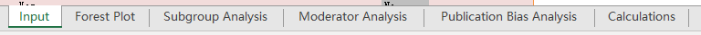第一张表是输入表。您可以在此表格中输入meta分析中的数据。接下来的四张是输出表：一张用于森林图，一张用于亚组分析，一张用于调节分析，一张用于发表偏倚(bias)分析。第六个工作表包含为生成四个输出工作表而执行的计算过程。对于工作簿的基本使用，您无需查看或使用此工作表。
下面将讨论 Meta-Essentials 工作簿的六个工作表，并附有屏幕截图。这些屏幕截图中使用的示例来自工作簿 1“Effect size data.xlsx”中的虚构数据。所有七个工作簿的所有六个工作簿基本相同。有一些特例会单独进行讨论。
不同的颜色代表单元格的不同用途。用户可以提供输入或更改设置的单元格始终为粉红色，计算过程的单元格为深灰色，输出的单元格为浅灰色（参见表 3）。
用户可以自由更改文件，但我们建议新手用户不要更改任何单元格，除了粉红色的单元格，它们是为用户输入而设计的。特别建议不要在计算表中插入或删除任何列或单元格，因为这可能会导致计算错误。如果您遇到麻烦，您可以尝试在 Meta-Essentials 重新赋值一个新的未经修改的工作簿, 再进行分析。您可以通过复制您在输入表中填写的数据并将其粘贴到“新”工作簿中来轻松完成此操作。建议在粘贴时仅粘贴值, 参考图3:
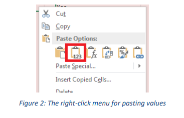3.1 Input sheet(输入表)
默认情况下，您在打开工作簿时将看到的工作表是输入工作表。工作簿 1“Effect size.xlsx”的输入表有九列。仅在“效应量”和“标准误差”列中需要输入（参见图 4 中的“Required”）。
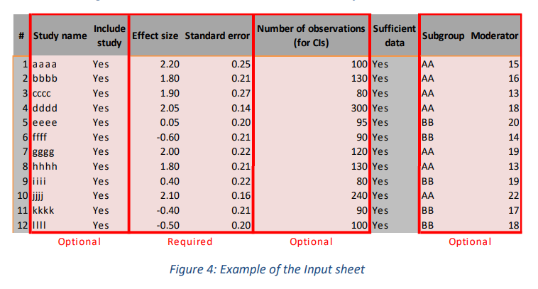在工作簿 1 中，您需要插入样本量（Numner of observations 即样本大小）以估计单个研究的置信区间，因为学生 t 分布的自由度基于它们。即，样本量对于计算meta分析效应量或任何附加分析都不是必需的，但对于计算单个研究的置信区间（如森林图所示）是必需的。
以下输入不是必需的，但可能有用：
Study name: 输入研究的名称或其他标识符（“研究名称”）。研究名称可以是您选择的任何名称；如果您为每项研究使用不同的名称，则效果最佳。
Subgroup 将不同研究进行分组。subgroup是可用于亚组分析的分类变量。您可以按您想要的任何方式输入此变量的类别：数字、文本或它们的组合。
Moderator 为研究的另一个特征输入分数, 作为调节变量。调节变量是一个连续变量，可用于调节剂分析。调节变量必须是一个数值变量，假定它至少具有一个区间尺度。
Include study: 这是一个可选项, 如果是Yes, 该数据就会被用于meta分析, 反之, 该行数据不会进行meta分析的计算。
“#”列中的单元格将自动生成数字, 用于表示每行数据的编号。如果“Include study”列和“Sufficient data”都为“Yes”，它才会显示一个数字。
“Sufficient data”列中的单元格自动表明是否输入了足够的数据以将研究纳入meta分析。在工作簿 1“Effect size data.xlsx”中，只要输入了特定研究的效应量和标准误差，它就会设置为“Yes”（表示数据完整）。在其他工作簿中，应用了不同的完整性标准。这些将在描述特定于特定工作簿的功能的部分中单独讨论。
翻译难免有错误, 有问题可以联系QQ2726725926, 或者微博@mlln-cn, 另外我们提供统计咨询, 有问题也可以联系我们。本手册是由Meta-Essentials手册翻译而来, 翻译的初衷是我们有同学要求使用Meta-Essentials做一个分析研究, 而Meta-Essentials是比较成熟的常用软件, 其实它是一套excel文件组成的, 适合大家学习, 并且还能看到计算过程, 所以我们选择Meta-Essentials作为一个教学的样板, 所以翻译了它的手册, 大家有需要用到的, 尽管拿去。
3.2 Forest Plot sheet(森林图表)
在这个表中, 在左侧，显示了一些由 Meta-Essentials 生成的统计数据。四个重要信息是:
- Combined Effect Size(组合效应量)
- CI: 其置信区间 (CI) 的下限和上限
- PI: 其预测区间 (PI) 的下限和上限
- 几个异质性统计数据
在中间，给出了一个表格，其中包含单个研究结果（参见图 6 中标有“Table”的红色矩形）和元分析中分配给研究的权重的图形表示
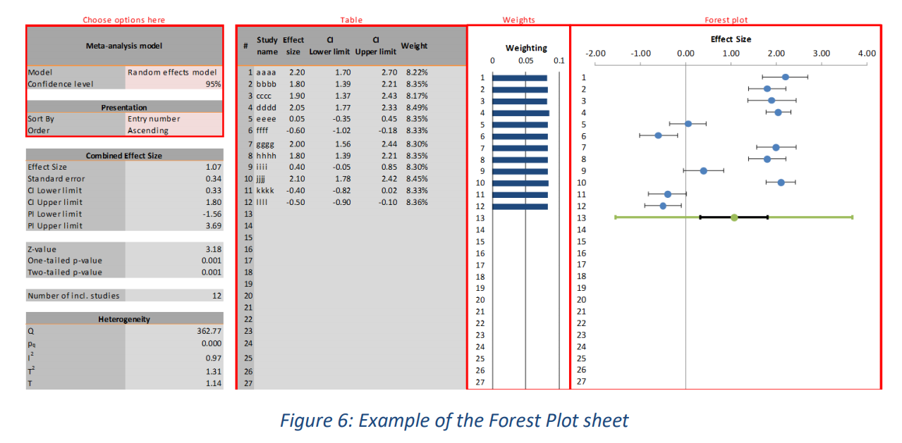3.2.1 Choose options 设置选项
在表格的左上角（参见图 6 中标有“Choose options here”的红色矩形），用户可以对元分析本身做出一些选择（“随机效应”与“固定效应”，以及置信水平）以及关于输出表上研究的排序（排序标准和排序顺序）。
用户可以在“固定效应”模型和“随机效应”模型之间进行选择。在“固定效应”模型中，假设在不同研究中观察到的效应量之间的所有差异仅由抽样误差引起。换句话说，假设每项研究的（未观察到的）“真实”效应量相同。meta分析的目的是估计真实效应量, 组合效应量（及其置信区间）被解释为对“真实”效应的估计。在“随机效应”模型中，假设不同的研究的效应量本身就是不同的。Meta分析的目的是估计这些真实效应量的方差，并且预测区间被解释为对该方差或离散度的估计（有关这些模型的更详细讨论，请参见 Hedges & Vevea， 1998）。在 Meta-Essentials 中，默认情况下使用随机效应模型，因为固定效应模型背后的假设很少得到满足，尤其是在社会科学中。此外，当使用固定效应模型有意义时，即，当效应大小差异很小时，随机效应模型会自动收敛为固定效应模型。
3.2.2 Prediction Interval 预测区间
Meta-Essentials 软件不仅生成组合效应大小的置信区间，还生成“预测区间”。大多数其他用于Meta分析的软件不会生成预测区间，尽管在我们看来，这是“随机效应”模型中最重要的结果，即必须假设“真实”效应大小会发生变化。如果选择 95% 的置信水平，则预测区间给出了在 95% 的情况下，未来研究的结果的范围，假设效应量是正态分布的（包括尚未纳入研究）。这与置信区间形成对比，后者“通常被解释为 95% 确定真实效应量所在的范围。这句话是一个松散的解释，但作为粗略的指南很有用。严格正确的解释是，如果一项研究被无限频繁地重复，并且每次都计算出 95% 的置信区间，那么这些区间中的 95% 将包含真实的效应量。” （Schünemann、Oxman、Vist、Higgins、Deeks、Glasziou 和 Guyatt，2011 年，第 12.4.1 节）。由于这是 MetaEssentials 软件的用户手册，而不是对元分析目标和最佳实践的介绍，因此我们无法在此扩展预测区间相对于置信区间的重要性（但请参阅，例如、Hak、Van Rhee 和 Suurmond，2015a；希金斯、汤普森和 Spiegelhalter，2009）。
3.3 Subgroup Analysis sheet 亚组分析表
当用户在Input表的“Subgroup”列中输入类别时，亚组分析表将分别显示每个亚组的元分析结果。例如，如果用户将研究中使用的数据来源编码为“美国”或“非美国”，则此表将给出“美国”研究的组合效应量和另一个组合效应量。
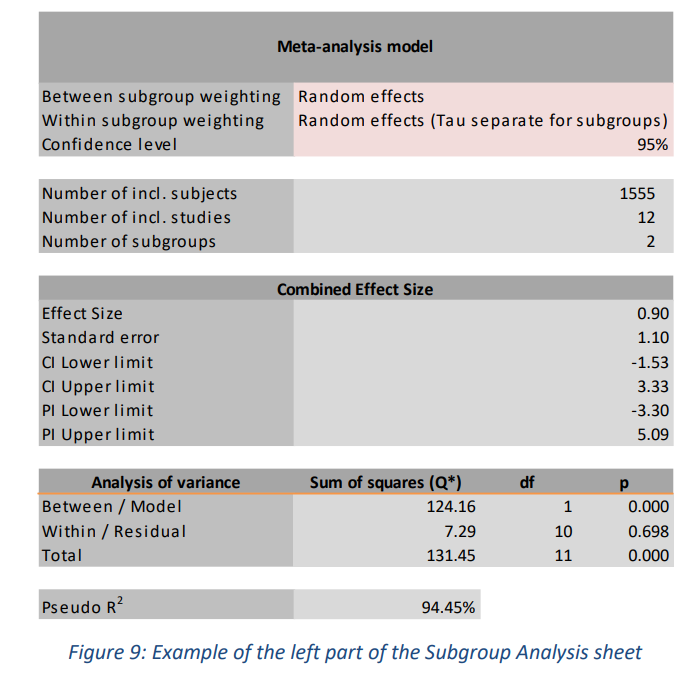打开”Subgroup Analysis”表。此工作表的左侧类似于 Forest Plot 工作表的左侧（参见图 9）。为清楚起见，我们使用 Microsoft Excel 的一项功能，该功能提供了“隐藏”某些列的机会。单击列顶部的加号可以访问这些部件（参见图 10）。单击第一个加号后，会出现一个表格，其中包含单个研究结果、每个亚组的组合效应量和整体组合效应量（参见图 11）。
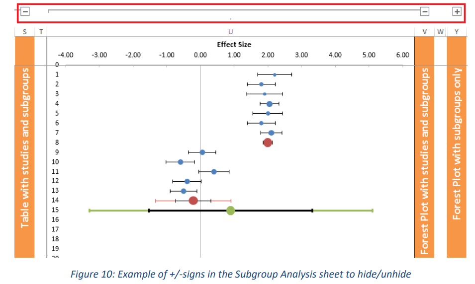 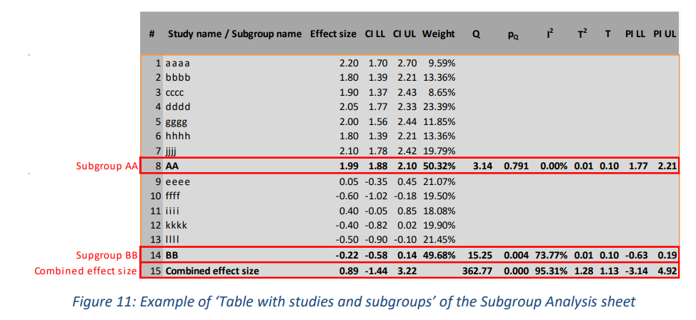此外，有两种类型的森林图可用：一种具有单个研究、亚组组合效应量和总组合效应（见图 12），另一种仅具有亚组和总组合效应，这增强了亚组的比较（见图 13）。在这些图中，蓝点代表单个研究，红点代表亚组，绿点代表总组合效应量。此外，亚组和组合效应大小的预测区间以各自的颜色显示，而置信区间以黑色显示。请注意，因为图 9 和图 10 示例中第一个亚组的置信区间非常小，以至于它几乎完全消失在红点后面。
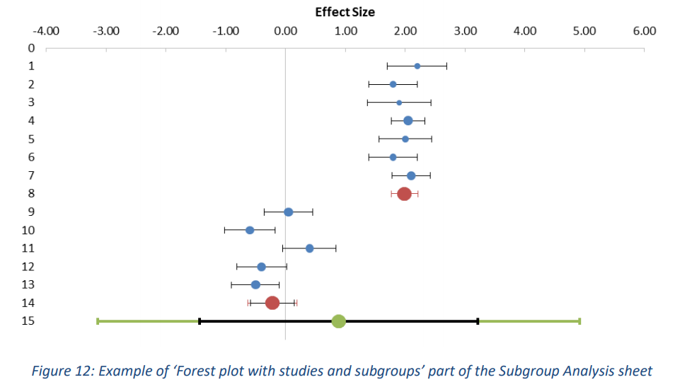 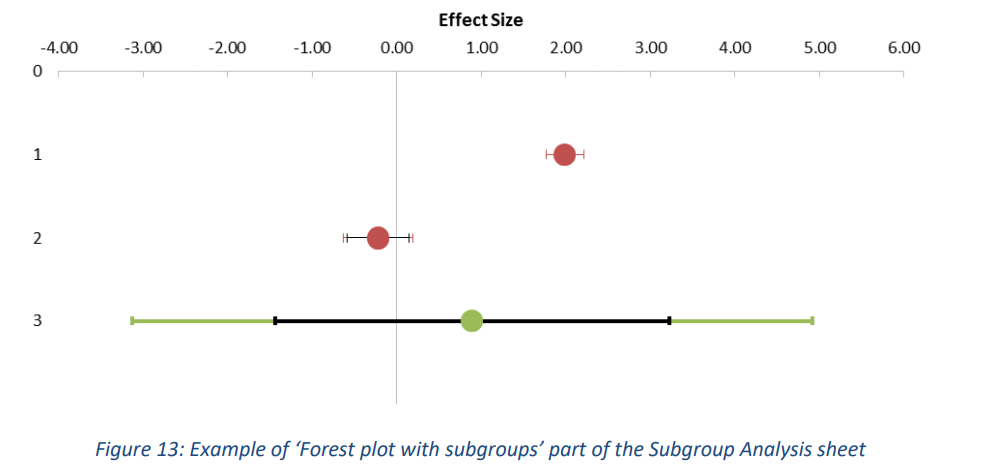3.3.1 Options 选项
用户必须选择如何将权重分配给亚组之间和亚组内的研究。对于“亚组之间的权重”，用户可以从“固定效应”和“随机效应”（默认）模型中进行选择。对于“亚组内加权”，用户可以在“固定效应”、“随机效应（子组的 Tau 分离）”（默认）和“随机效应（子组上的 Tau 合并）”之间进行选择。
如果选择后一个选项，每个亚组的方差分量 (Tau) 将被合并（平均）并用于每个亚组。请注意，这些默认值并不总是适合你的研究使用。理论将不得不告诉使用哪个选项；一般来说，当您的meta分析或任何特定亚组中包含的研究很少时，使用合并方差分量更合适（Borenstein, Hedges, & Higgins, 2009, pp. 149 ff）。
3.3.2 Analysis of variance
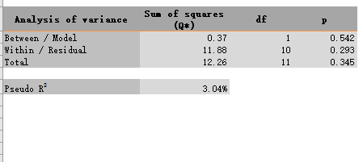此表提供基于平方和 (Q) 的方差分析的统计数据。该表根据设置的模型（亚组内的固定效应或随机效应）自动提供这些平方和。在固定效应模型下，Q（无星号）可用于评估给定组的异质性，就像在常规meta分析中一样。但是，在亚组内的随机效应模型下，Q* 只能用于划分内部（或残差）和之间（或模型）方差的总方差，而不能用于检验效应的同质性。模型解释的方差量（Q/Q* 之间）可用于检验亚组的组合效应大小是否相等。
翻译难免有错误, 有问题可以联系QQ2726725926, 或者微博@mlln-cn, 另外我们提供统计咨询, 有问题也可以联系我们。本手册是由Meta-Essentials手册翻译而来, 翻译的初衷是我们有同学要求使用Meta-Essentials做一个分析研究, 而Meta-Essentials是比较成熟的常用软件, 其实它是一套excel文件组成的, 适合大家学习, 并且还能看到计算过程, 所以我们选择Meta-Essentials作为一个教学的样板, 所以翻译了它的手册, 大家有需要用到的, 尽管拿去。
3.4 Moderator Analysis sheet 调节分析表
如果您在Input表的“Moderator”列中输入了分数，则将使用“Moderator”作为效应量的预测因子运行加权回归。在 Meta-Essentials 中，无法运行多变量回归分析，因此一次只能评估一个调节变量。
在工作表的左侧（如图 15 所示），用户可以在“固定效应”模型和“随机效应”模型之间进行选择。用户还可以设置置信度。与其他工作表一样，随机效应模型被设置为默认值，因为只有部分观察到的异质性可能由调节变量解释。还提供了一张表格，其中包含每项研究的一些基本统计数据。
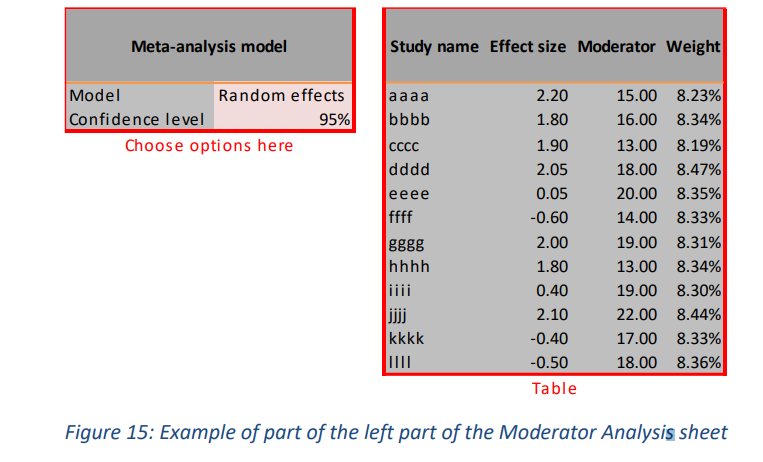此回归最重要的结果是斜率系数 (B)（参见图 16 中的红色矩形），它是对调节变量与研究效应量之间关联的估计。这也在图中进行了可视化（也显示在图 16 中），其中研究的效果大小与它们的调节值和通过这些点的回归线绘制在一起。请注意，点的大小代表它们的相对权重。但是，由于在示例中所有研究都接受了大致相同的权重，因此点大小似乎相等
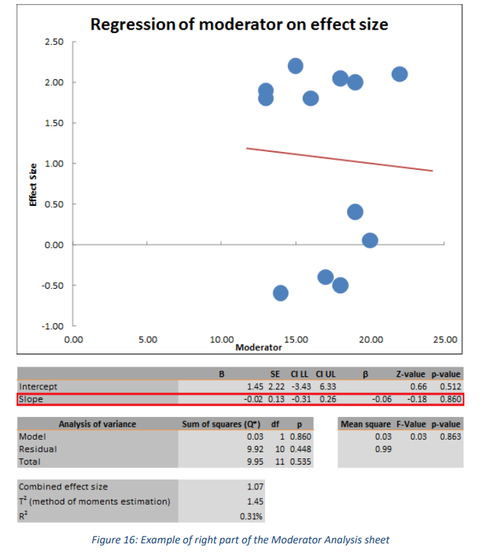3.5 Publication Bias Analysis sheet 发表偏倚分析表
发表偏倚分析不是一个核心的meta分析，对于某些方法，有相当强的前提假设，这意味着它们应该谨慎使用（见 Hak 等人，2015a）
Meta-Essentials 提供了关于发表偏倚分析的多个统计数据：漏斗图、Egger 回归、Begg 和 Mazumdar 的秩相关检验、标准化残差直方图 Galbraith 图、正态分位数图和几个failsafe-N测试。
Multiple procedures or statistics regarding publication bias analysis are provided by Meta-Essentials:
funnel plot, Egger regression, Begg and Mazumdar’s rank correlation test, standardized residual histogram, Galbraith plot, normal quantile plot, and several failsafe-N tests.
由于大多数发表偏倚分析仅对固定效应模型有意义，因此我们将其设置为该表的默认值。但是，您可以将其更改为表格左侧表格中的随机效应模型，您还可以在其中设置置信度和预测区间的置信水平（参见图 18 中标有“choose options here”的红色矩形）。
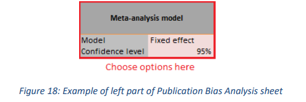3.5.1 Funnel plot 漏斗图
漏斗图（参见图 20）其实就是散点图, 由效应大小（在 x 轴上）和标准误差（在 y 轴上）构成。它还显示了组合效应大小（绿点）及其置信区间（黑色）和预测区间（绿色）。该图还显示了一条垂直线（也以红色显示），它贯穿（调整后的）组合效应大小以及相应的置信区间的下限和上限（红色对角线）。
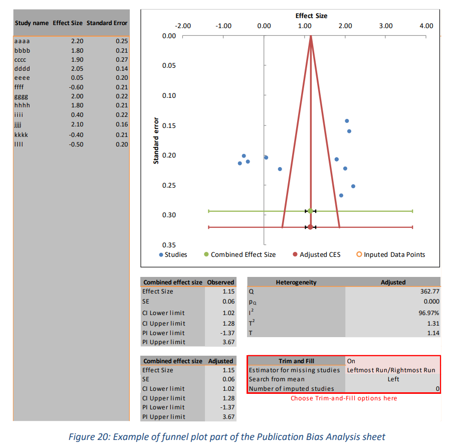用户可以“打开”或“关闭”Trim and Fill程序；如果你不知道Trim和Fill技术, 可以忽略这部分, 后面视频教程里会专门讲。
对于这部分, 我们可以决定在综合效应量的左侧还是右侧进行Trim或者Fill, 还可以设置需要修改的研究数。
翻译难免有错误, 有问题可以联系QQ2726725926, 或者微博@mlln-cn, 另外我们提供统计咨询, 有问题也可以联系我们。本手册是由Meta-Essentials手册翻译而来, 翻译的初衷是我们有同学要求使用Meta-Essentials做一个分析研究, 而Meta-Essentials是比较成熟的常用软件, 其实它是一套excel文件组成的, 适合大家学习, 并且还能看到计算过程, 所以我们选择Meta-Essentials作为一个教学的样板, 所以翻译了它的手册, 大家有需要用到的, 尽管拿去。
3.5.2 Egger 回归与 Begg 和 Mazumdar 秩相关检验
(这部分需要你自己懂这两个算法, 不懂的请看视频教程)
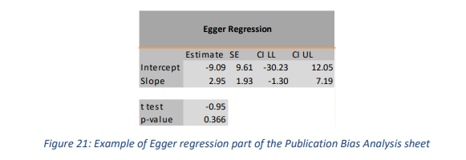Egger 回归给出“漏斗图不对称的程度”（Egger, Smith, Schneider, & Minder, 1997, p. 629）。此工作表上的输出包括此截距（及其置信区间）以及 t 检验的结果（t 值和 p 值）（示例参见图 21）。
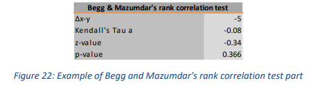Begg 和 Mazumdar 等级相关性检验使用效应大小等级与其方差等级之间的相关性 (Begg & Mazumdar, 1994, p. 1088)。此表显示 (a) 一致和不一致等级之间的差异 (Δxy)，(b) 等级相关性（Kendall’s Tau a），(c) z 值以及 (d) 此相关性的 p 值（有关示例，请参见图 22）。
3.5.3 Standardized Residual Histogram 标准化残差直方图
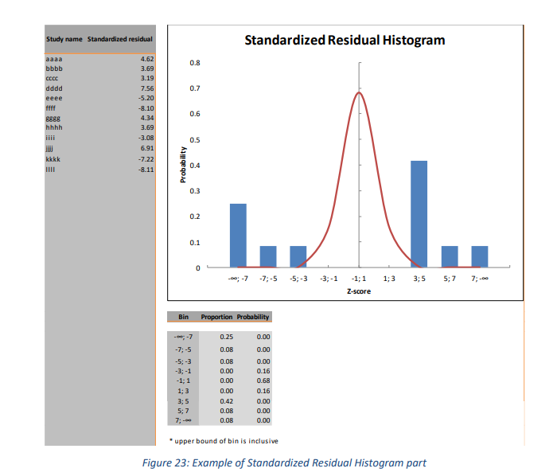标准化残差直方图基于这样一种观点，即单个研究的 z 分数（也称为标准化残差）应遵循以组合效应量为均值的正态分布（Sutton 等，2000，第 41 页）。为了评估效应量中是否存在异常值，可以将残差放入直方图中，并根据标准正态分布绘制它们。标准化残差排列在 9 区间中，各个区间的研究个数决定了直方图的高度（示例参见图 23）。
3.5.4 Galbraith Plot
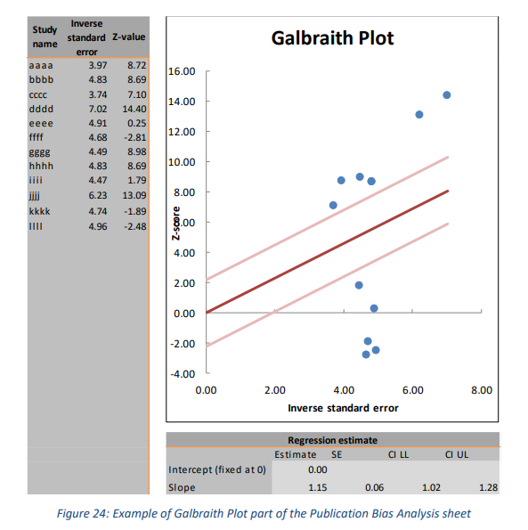加尔布雷思图或径向图 (Galbraith, 1988) 的基本思想是对标准误差的倒数运行z分数的未加权回归，截距限制为零（参见图 24）。此图可用于查找效应量中的异常值。预期 95% 的研究在两条（浅色）置信区间线定义的区域内。 MetaEssentials 提供了一个包含研究的表格、一个绘图和一个包含回归估计的表格（参见图 24）。
3.5.5 Normal Quantile Plot 正态分位数图
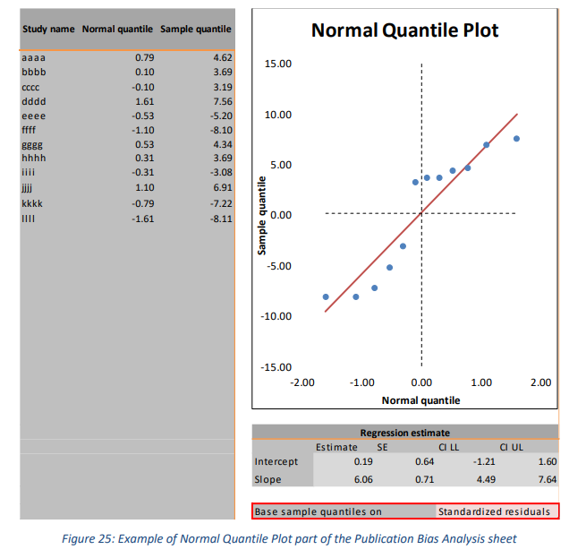正态分位数图（或 Q-Q-图）也用于评估数据的正态性（Wang & Bushman，1998）。期望是所有数据点都近似在一条直线上，这表明数据的分布遵循标准正态分布。 Meta-Essentials 中的这部分（参见图 25）由四个部分组成：包含研究的表格、绘图、回归估计和用于计算样本分位数的输入选项。该表显示了研究名称、估计的分位数和样本分位数。该图给出了这些正态分位数和样本分位数以及通过它们的回归线。使用输入选项，用户可以选择将样本分位数基于“标准化残差”或“Z 分数”（参见图 25 中的红色矩形）。
3.5.6 Failsafe-N tests 故障安全数
发表偏倚(出版偏差)分析表的最后一部分包Failsafe-N的几个估计值。为了说明这一点，假设对于任何研究，许多其他研究没有发表。假设这些额外的研究结果不显着，即它们的效应量基本上为零。然后，故障安全数估计了这些额外研究的数量，将这些假设的研究纳入以后会使得综合效应量不显著。
这个数字越大, 说明我们得到的综合效应量越”安全”, 也就是越显著。
3.5.6.1 Rosenthal
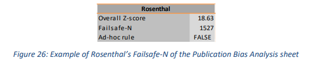为了计算由 Rosenthal (1979) 首次描述的 Failsafe-N，进行了联合显着性检验。故障安全数是缺失研究数(假设效应量均值为0)，加入这些研究后使得综合效应量不显著（参见图 26 中的示例）。
3.5.6.2 Gleser & Olkin
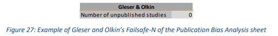Gleser 和 Olkin (1996) 提供了对未发表结果数量的估计（示例参见图 27）。它使用的假设是，meta分析使用的研究数据具有最大的显着性（即最小的 p 值）。meta分析中最大 p 值的大小决定了估计的未发表研究的数量。没有方法可以评估这个数字是小还是大，但可以与meta分析中实际包含的研究数量进行比较。
3.5.6.3 Orwin
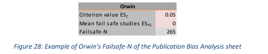Orwin (1983) 通过查看效应量而不是 p 值使用了稍微不同的方法。对于这种方法，用户为综合效应量设置一个标准值。用户可以设置任何会使meta分析结果任意 (ESC) 的值（请参见图 28 中的示例）。其次，用户设置被推算的研究的平均值 (ESFS)。然后，故障安全数将给出具有平均效应大小 (ESFS) 的研究数量，这会将组合效应降低到标准值 (ESC)。
3.5.6.4 Fisher
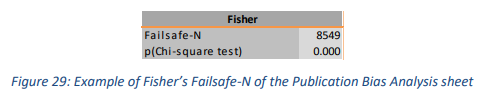Meta-Essentials 提供的第四个也是最后一个故障安全数方法（由 Fisher 于 1932 年提出）（示例参见图 29）。它基于meta分析中研究的 p 值的自然对数之和。该数字可以用卡方分布进行检验，自由度是meta分析中研究数量的两倍。
3.6 Calculations sheet
Meta-Essentials 的Calculations包含其他表中需要的的所有计算。可以通过单击相关选项卡来访问它，如图 17 所示。这是一个内容很多的表，其中不同的部分由标题清楚地指示。除了记录分析的中间过程，或者输入和输出之间的转换，该表没有其他功能。因为阅读这份工作表对于你的meta分析没有太多帮助, 而且表中的一些术语并不标准, 因此我们只是简单的介绍一下这个表。
3.7 Statistical procedures 统计方法
Meta-Essentials 在随机效应模型中应用方差加权方法，基于 DerSimonian-Laird 估计器（DerSimonian & Laird，1986）添加研究间方差分量。请注意，在工作簿 2“Differences between independent groups -
binary data.xlsx”中，您可以在三种加权方法之间进行选择。使用随机效应模型的加权方差方法估计置信区间，参见 Marín-Martínez (2008)。因此，由 Meta-Essentials 计算的组合效应量的置信区间和预测区间可能与由另一个meta分析程序计算的不同。此外，我们还使用 t 分布来计算单个研究效应量的置信区间（大多数其他meta分析工具未完成）。
有关出版偏差分析表中应用的方法、它们的应用以及如何解释它们的讨论，请参阅 Sterne、Gavaghanb 和 Egger（2000 年）以及 Anzures-Cabrera 和 Higgins（2010 年）。特别是对于修剪和填充图，Meta-essentials 使用迭代过程从右侧（或左侧）修剪研究集，重新估计组合效应大小，最后在另一侧用对称结果填充图均值。 Meta-Essentials 运行该过程的三个迭代，这对于许多现实生活中的案例来说已经足够了 (Duval & Tweedie, 2000a)。
翻译难免有错误, 有问题可以联系QQ2726725926, 或者微博@mlln-cn, 另外我们提供统计咨询, 有问题也可以联系我们。本手册是由Meta-Essentials手册翻译而来, 翻译的初衷是我们有同学要求使用Meta-Essentials做一个分析研究, 而Meta-Essentials是比较成熟的常用软件, 其实它是一套excel文件组成的, 适合大家学习, 并且还能看到计算过程, 所以我们选择Meta-Essentials作为一个教学的样板, 所以翻译了它的手册, 大家有需要用到的, 尽管拿去。
4 每个工作簿的特点
Meta-Essentials 的基本特征已经在上面讨论过了。用户将能够浏览 Meta-Essentials 工作簿的不同工作表。但是，这些工作簿中的每一个都具有独特的功能，必须先了解这些功能才能正确使用它们。本节将讨论这些功能。
4.1 Workbook 2 ‘Differences between independent groups - binary data.xlsx’
4.1.1 Input sheet
此工作簿所需的输入不是具有标准误差的点估计（例如在工作簿 1 中）。相反，用户必须输入每组中的案例数（参见图 45 右侧的二乘二表格中的单元格 a、b、c 和 d）。实际上，这意味着用户必须填写这个 2×2 表格中的六个单元格中的至少四个。图 45 中的每一行都代表了根据这一原则具有足够信息的研究。
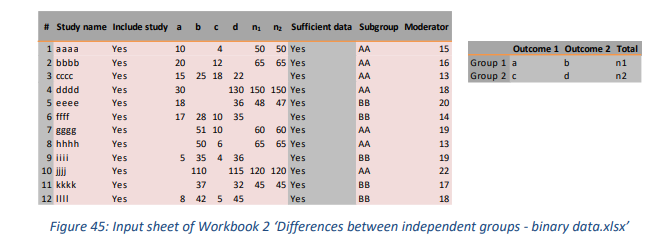本工作簿的一个独特之处在于，可以将效应量（例如，优势比）转换为另一个（例如，风险差异）。无法在此工作簿中直接插入这些效果大小中的任何一个，因为如果没有 2x2 表中的完整信息，则无法进行此转换。
4.1.2 Forest Plot sheet
此工作簿的一个独特功能是额外的森林图，它以对数标度显示效应量，示例参见图 46 中的红色矩形。请注意，由于四舍五入，x 轴上的最小值显示为“0.13”而不是“0.125”。 这样做可以更高的显示优势比或者风险比, 建议始终使用对数森林图来呈现优势比或风险比的meta分析，并仅将“正常”森林图用于风险差异。
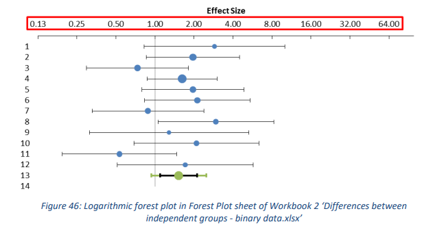4.1.2.1 Weighting methods
用户可以在三种加权方法之间进行选择：标准反方差法、Mantel-Haenszel 方法（Mantel & Haenszel，1959）或 Peto-Odds 方法（Peto 等，1977，第 31 页）。
4.1.2.2 Meta-analysis model and presentation effect size
从统计的角度来看，元分析 (Log) 比值比更可取，因为比值比不太容易出现异质性（尤其是与风险差异相比）。然而，不利的一面是，赔率比很难解释。
Workbooks 3 ‘Differences between independent groups - continuous data.xlsx’ and 4 ‘Differences between dependent groups - continuous data.xlsx’
4.2.1 Input sheet
工作簿 3 和 4 具有相当多的不同输入格式，参见工作簿 3 的图 55 和工作簿 4 的图 56。因此，这些工作簿的一个重要特征是它们可以用作效应量计算器。例如，用户可以插入原始数据(均值/标准差/样本量)或者统计量(T值/F值), 效应量就可以被计算出来。
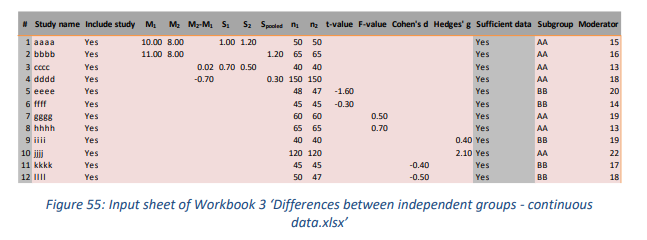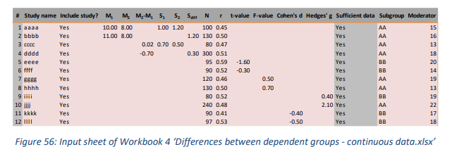
翻译难免有错误, 有问题可以联系QQ2726725926, 或者微博@mlln-cn, 另外我们提供统计咨询, 有问题也可以联系我们。本手册是由Meta-Essentials手册翻译而来, 翻译的初衷是我们有同学要求使用Meta-Essentials做一个分析研究, 而Meta-Essentials是比较成熟的常用软件, 其实它是一套excel文件组成的, 适合大家学习, 并且还能看到计算过程, 所以我们选择Meta-Essentials作为一个教学的样板, 所以翻译了它的手册, 大家有需要用到的, 尽管拿去。
4.2.1.1 Sufficient data
为了能够计算效应量, 我们需要足够的数据, 但是不是所有数据都需要, 只需要”足够”的, 我们有一些选项:
- M1, M2, S1, S2, n1, and n2; as in study aaaa;, 两组的均值/标准差/样本量
- M1, M2, Spooled, n1, n2; study bbbb; 两组的均值/联合标准差/样本量
- M2-M1, S1, S2, n1 and n2; study cccc; 两组的均值差/标准差/样本量
- t-value, n1 and n2; study eeee; T值和样本量
- F-value, n1 and n2; study gggg; F值和样本量
- Cohen’s d OR Hedges’ g with n1 and n2; studies kkkk and iiii respectively. 效应量和样本量
值得注意的是, 两组的样本量是必须知道的, 在工作簿4中的输入表也是一样的, 它是重复测量的均值差异才用到的, 但是
工作簿4中所说的”两组”就会变成”两次测试”。本工作簿中还需要样本大小（根据定义只有一组），以及描述相关研究中成对观察之间的相关系数 (r) 也是如此。然而，由于这种相关性通常不会被报告并且不能从其他提供的统计数据中得出，“研究人员将需要使用其他来源的数据来估计这种相关性。如果相关性未知，则可以处理一系列看似合理的相关性，并使用敏感性分析来查看这些相关性如何影响结果”（Borenstein，2009，第 227-228 页）。
如果输入的信息足够多，Meta-Essentials 将自动使用“最简单”选项：首先是效应量（其中 g 优先于 d），然后是具有标准误差的平均值，最后是 t 值和 F 值。效应量将自动计算为标准化平均差异。在输出表上，用户可以选择“Cohen’s d”或“Hedges” g”作为效应量。
4.2.2 Effect size measures
Cohen d 和 Hedges g 都是标准化的均值差。 Cohen’s d 首先由 Cohen (1969) 提出，然后 Hedges (1981) 发现了一个偏差，尤其是在小样本的情况下。现在习惯于纠正这种偏差，但有些人仍然将其称为 Cohen 的 d，而 Hedges 的 g 将是一个更清晰的名称。其他人（例如 Cumming，2012）将后者称为无偏的估计。在 Meta-Essentials 中，Cohen 的 d 指的是 Cohen 提出的标准化平均差，Hedges 的 g 指的是 Hedges 提出的经过偏差调整的标准化平均差。
4.3 Workbook 5 ‘Correlational data.xlsx’
4.3.1 Fisher’s transformation
本工作簿与之前讨论的工作簿之间的主要区别是使用了所谓的 Fisher 的 r-to-z 变换 (Fisher, 1921)，该变换将自动应用，因为变换后的相关性 (z) 将更趋于正态，并且变换是方差稳定。对于这种转换后的相关性，根据样本大小估计标准误差。
4.3.2 Input sheet
本工作簿中所需的输入仅为 (a) 相关系数和 (b) 样本大小（参见图 57）。元分析使用 Fisher 转换值运行，这些值被转换回“正态”相关系数以供展示。本工作簿中使用下标 z 来表示转换后的值。请注意，相关系数等于标准化的二元回归系数。
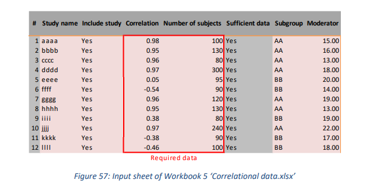4.3.3 Forest Plot sheet
使用“排序”功能，用户还可以从包括 Fisher 变换值的选项中进行选择，例如效应大小、相关系数和方差，示例参见图 58；它们用 (z) 表示。然后它的值会自动显示在 J 列中（但未在图中或表中用于组合效应大小）。
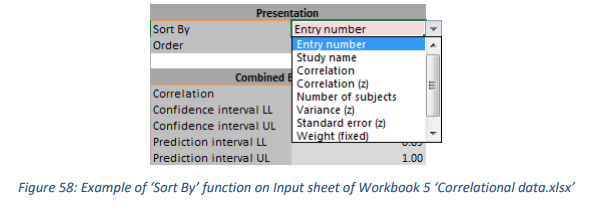4.3.4 Moderator Analysis sheet
对于调节分析，使用并显示了 Fisher 转换后的相关系数。这与其他一些工作表不同，在这些工作表中，经过必要的计算后，Fisher 变换后的相关系数被转换回以呈现为“正态”相关系数。
4.3.5 Publication Bias Analysis sheet
对于发表偏倚分析，使用并显示了 Fisher 转换后的相关系数。这与其他一些工作表不同，在这些工作表中，经过必要的计算后，Fisher 变换后的相关系数被转换回以呈现为“正态”相关系数。
4.4 Workbooks 6 ‘Partial correlational data.xlsx’ and 7 ‘Semi-partial correlational data.xlsx’
偏相关和半偏相关都用于比较使用不同回归模型的研究结果（Aloë & Becker，2012；Aloë，2014）。尽管偏相关和半偏相关具有与相关具有相同的尺度和统计特征，但很多人还是建议不要将这三种效应量混合在一起做meta分析, 因为他们就不是一种算法。
4.4.1 Fisher’s transformation
在工作簿 6 的每个工作表中，用户都可以选择应用 Fisher 变换。请注意，到目前为止，偏相关和 Fisher 转换值的分布还不是很清楚（例如，Aloë，2014，第 48 页）。建议运行两种分析并比较结果。
4.4.2 Input sheet
工作簿 6 和 7 有各种输入选项（参见图 59 和图 60）。用户可以插入预先计算的（半）偏相关，也可以选择让工作簿计算它们。在后一种情况下，Workbook 6 中的三种主要输入格式是：
- T值/自变量个数, 样本量(study dddd)
- beta/标准误(beta)/自变量个数/样本量 (study gggg)
- 偏相关/ 自变量个数/样本量 (study jjjj)
- 偏相关/标准误/样本量(study aaaa in Figure 31)请注意，使用此输入无法进行 Fisher 转换（如“‘Sufficient data”列中所示。
在工作簿 7 中，可能的输入格式与工作簿 6 中的类似，但是，提供 R 平方对于所有输入选项是强制性的，除非提供半偏相关、标准误差（半偏相关）、和观察次数。
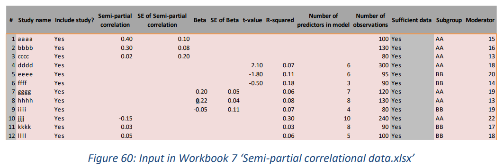4.4.3 Forest Plot sheet
如果输入表中未插入样本量，则无法生成单个研究的置信区间，因为它们依赖于 t 分布, 而t分布依赖于样本量。亚组分析中也是一样的情况。
翻译难免有错误, 有问题可以联系QQ2726725926, 或者微博@mlln-cn, 另外我们提供统计咨询, 有问题也可以联系我们。本手册是由Meta-Essentials手册翻译而来, 翻译的初衷是我们有同学要求使用Meta-Essentials做一个分析研究, 而Meta-Essentials是比较成熟的常用软件, 其实它是一套excel文件组成的, 适合大家学习, 并且还能看到计算过程, 所以我们选择Meta-Essentials作为一个教学的样板, 所以翻译了它的手册, 大家有需要用到的, 尽管拿去。
5 Adapting plots for reporting
在 Meta-Essentials 中，广泛使用了 Microsoft Excel 中可用的图形显示。为了充分利用报告中的这些显示，编辑它们可能很有用。例如，在出版物中，灰度图可能是首选。在 Excel 中，根据个人喜好进行更改相当简单。这里讨论了一些建议。
首先，建议先在 Excel 中编辑显示内容，然后再将它们复制到文字处理程序中。在 Excel（2010 及更高版本）中，“左键单击”显示时将出现“图表工具”功能。可以更改颜色、轴属性、大小、标题和标签等功能。通过“右键单击”图表，然后选择“选择数据”，可以更改图表中显示的项目。默认情况下，显示单个研究的效应大小及其置信区间以及组合效应大小及其置信区间和预测区间。
可以在“森林图”表和“子组分析”表上调整森林图的大小。这些图表默认显示 200 项研究（这是当前可以进入 Meta-Essentials 分析的最大研究数量）。通常，图形的（大）部分是空的。建议先在 Excel 中更改图表的轴和大小，然后再将其复制到文本文档中。右键单击垂直轴，单击“格式轴”并将“轴选项”下的参数“最大值”更改为“自动”（或手动插入包含的研究数量，加一表示组合效应大小，再加上子组分析图的子组数）。然后向下滚动到图的底部并通过拖放来减小图表区域的大小
翻译难免有错误, 有问题可以联系QQ2726725926, 或者微博@mlln-cn, 另外我们提供统计咨询, 有问题也可以联系我们。本手册是由Meta-Essentials手册翻译而来, 翻译的初衷是我们有同学要求使用Meta-Essentials做一个分析研究, 而Meta-Essentials是比较成熟的常用软件, 其实它是一套excel文件组成的, 适合大家学习, 并且还能看到计算过程, 所以我们选择Meta-Essentials作为一个教学的样板, 所以翻译了它的手册, 大家有需要用到的, 尽管拿去。
6 References
Aloë, A. M. (2014). An empirical investigation of partial effect sizes in meta-analysis of correlational
data. The Journal of General Psychology, 141(1), 47-64.
dx.doi.org/10.1080/00221309.2013.853021
Aloë, A. M., & Becker, B. J. (2012). An effect size for regression predictors in meta-analysis. Journal of
Educational and Behavioral Statistics, 37(2), 278-297.
dx.doi.org/10.3102/1076998610396901
Anzures-Cabrera, J., & Higgins, J. P. T. P. T. (2010). Graphical displays for meta-analysis: An overview
with suggestions for practice. Research Synthesis Methods, 1(1), 66-80.
dx.doi.org/10.1002/jrsm.6
Begg, C. B., & Mazumdar, M. (1994). Operating characteristics of a rank correlation test for
publication bias. Biometrics, 50(4), 1088-1101. dx.doi.org/10.2307/2533446
Borenstein, M. (2009). Effect sizes for continuous data. In H. Cooper, L. V. Hedges & J. C. Valentine
(Eds.), The handbook of research synthesis and meta-analysis (Second Ed.) (pp. 221-235).
New York, NY: Russell Sage Foundation. www.worldcat.org/oclc/264670503
Borenstein, M., Hedges, L. V., & Higgins, J. P. T. P. T. (2009). Introduction to meta-analysis.
Chichester, UK: John Wiley & Sons. dx.doi.org/10.1002/9780470743386
Cohen, J. (1969). Statistical power analysis for the behavioral sciences. New York, NY: Academic
Press. www.worldcat.org/oclc/34549
Cumming, G. (2012). Understanding the new statistics: Effect sizes, confidence intervals, and metaanalysis. New York, NY: Routledge. dx.doi.org/10.4324/9780203807002
DerSimonian, R., & Laird, N. (1986). Meta-analysis in clinical trials. Controlled Clinical Trials, 7(3), 177-
188. dx.doi.org/10.1016/0197-2456(86)90046-2
Duval, S., & Tweedie, R. (2000a). A nonparametric “trim and fill” method of accounting for
publication bias in meta-analysis. Journal of the American Statistical Association, 95(449), 89-
98. dx.doi.org/10.1080/01621459.2000.10473905
Duval, S., & Tweedie, R. (2000b). Trim and fill: A simple funnel-plot-based method of testing and
adjusting for publication bias in meta-analysis. Biometrics, 56(2), 455-463.
dx.doi.org/10.1111/j.0006-341x.2000.00455.x
Egger, M., Smith, G. D., Schneider, M., & Minder, C. (1997). Bias in meta-analysis detected by a
simple, graphical test. British Medical Journal, 315(7109), 629-634.
dx.doi.org/10.1136/bmj.315.7109.629
Fisher, R. A. (1921). On the “probable error” of a coefficient of correlation deduced from a small
sample. Metron, 1, 3-32. hdl.handle.net/2440/15169
Fisher, R. A. (1932). Statistical methods for research workers (Fourth Ed.). Edinburgh, UK: Oliver &
Boyd. www.worldcat.org/oclc/4971991
Galbraith, R. F. (1988). Graphical display of estimates having differing standard errors. Technometrics,
30(3), 271-281. dx.doi.org/10.1080/00401706.1988.10488400
User manual for Meta-Essentials: 6. References
48
Gleser, L. J., & Olkin, I. (1996). Models for estimating the number of unpublished studies. Statistics in
Medicine, 15(23), 2493-2507. dx.doi.org/10.1002/(sici)1097-
0258(19961215)15:23%3C2493::aid-sim381%3E3.0.co;2-c
Hak, T., Van Rhee, H. J., & Suurmond, R. (2015). How to interpret results of meta-analysis. Rotterdam,
The Netherlands: Erasmus Rotterdam Institute of Management. www.erim.eur.nl/researchsupport/meta-essentials/downloads
Hedges, L. V. (1981). Distribution theory for Glass’s estimator of effect size and related estimators.
Journal of Educational and Behavioral Statistics, 6(2), 107-128. dx.doi.org/10.2307/1164588
Hedges, L. V., & Vevea, J. L. (1998). Fixed-and random-effects models in meta-analysis. Psychological
Methods, 3(4), 486. dx.doi.org/10.1037/1082-989x.3.4.486
Higgins, J. P. T., & Thompson, S. G. (2002). Quantifying heterogeneity in a meta-analysis. Statistics in
Medicine, 21(11), 1539-1558. dx.doi.org/10.1037/1082-989x.3.4.486
Higgins, J. P. T., Thompson, S. G., Deeks, J.J., & Altman, D.G. (2003) Measuring inconsistency in metaanalyses. British Medical Journal, 327(7414), 557-560. dx.doi.org/10.1136/bmj.327.7414.557
Higgins, J. P. T., Thompson, S. G., & Spiegelhalter, D. J. (2009). A re-evaluation of random-effects
meta-analysis. Journal of the Royal Statistical Society. Series A, (Statistics in Society), 172(1),
159. dx.doi.org/10.1111/j.1467-985x.2008.00552.x
L’Abbé, K. A., Detsky, A. S., & O’Rourke, K. (1987). Meta-analysis in clinical research. Annals of
Internal Medicine, 107(2), 224-233. dx.doi.org/10.7326/0003-4819-108-1-158_2
Mantel, N., & Haenszel, W. (1959). Statistical aspects of the analysis of data from retrospective
studies of disease. Journal of the National Cancer Institute, 22(4), 719-748.
jnci.oxfordjournals.org/content/22/4/719.full.pdf+html
Orwin, R. G. (1983). A fail-safe N for effect size in meta-analysis. Journal of Educational Statistics,
8(2), 157-159. dx.doi.org/10.2307/1164923
Peto, R., Pike, M. C., Armitage, P., Breslow, N. E., Cox, D. R., Howard, S. V., . . . Smith, P. G. (1977).
Design and analysis of randomized clinical trials requiring prolonged observation of each
patient. II. Analysis and examples. British Journal of Cancer, 35(1), 1-39.
dx.doi.org/10.1038/bjc.1977.1
Rosenthal, R. (1979). The file drawer problem and tolerance for null results. Psychological Bulletin,
86(3), 638-64. dx.doi.org/10.1037/0033-2909.86.3.638
Sánchez-Meca, J., & Marín-Martínez, F. (2008). Confidence intervals for the overall effect size in
random-effects meta-analysis. Psychological Methods, 13(1), 31-48.
dx.doi.org/10.1037/1082-989x.13.1.31
Schünemann, H. J., Oxman, A. D., Vist, G. E., Higgins, J. P. T. P. T., Deeks, J. J., Glasziou, P., & Guyatt,
G. H. (2011). Confidence intervals. In J. P. T. Higgins, & S. Green (Eds.), Cochrane handbook
for systematic reviews of interventions (version 5.1.0) (Section 12) The Cochrane
Collaboration. handbook.cochrane.org/chapter_12/12_4_1_confidence_intervals.htm
Sterne, J. A., Gavaghan, D., & Egger, M. (2000). Publication and related bias in meta-analysis: Power
of statistical tests and prevalence in the literature. Journal of Clinical Epidemiology, 53(11),
1119-1129. dx.doi.org/10.1016/s0895-4356(00)00242-0
User manual for Meta-Essentials: 6. References
49
Sutton, A. J., Abrams, K. R., Jones, D. R., Jones, D. R., Sheldon, T. A., & Song, F. (2000). Methods for
meta-analysis in medical research. Chichester, U.K.: Wiley. www.worldcat.org/oclc/44167986
Van Rhee, H. J., & Suurmond, R. (2015). Working paper: Meta-analyze dichotomous data: Do the
calculations with log odds ratios and report risk ratios or risk differences. Rotterdam, The
Netherlands: Erasmus Rotterdam Institute of Management. www.erim.eur.nl/researchsupport/meta-essentials/downloads
Wang, M. C., & Bushman, B. J. (1998). Using the normal quantile plot to explore meta-analytic data
sets. Psychological Methods, 3(1), 46-54. dx.doi.org/10.1037/1082-989x.3.1.46
翻译难免有错误, 有问题可以联系QQ2726725926, 或者微博@mlln-cn, 另外我们提供统计咨询, 有问题也可以联系我们。本手册是由Meta-Essentials手册翻译而来, 翻译的初衷是我们有同学要求使用Meta-Essentials做一个分析研究, 而Meta-Essentials是比较成熟的常用软件, 其实它是一套excel文件组成的, 适合大家学习, 并且还能看到计算过程, 所以我们选择Meta-Essentials作为一个教学的样板, 所以翻译了它的手册, 大家有需要用到的, 尽管拿去。
注意
统计咨询请加QQ 2726725926, 微信 mllncn, SPSS统计咨询是收费的, 不论什么模型都可以, 只限制于1个研究内.
跟我学统计可以代做分析, 每单几百元不等.
本文由jupyter notebook转换而来, 您可以在这里下载notebook
可以在微博上@mlln-cn向我免费题问
请记住我的网址: mlln.cn 或者 jupyter.cn